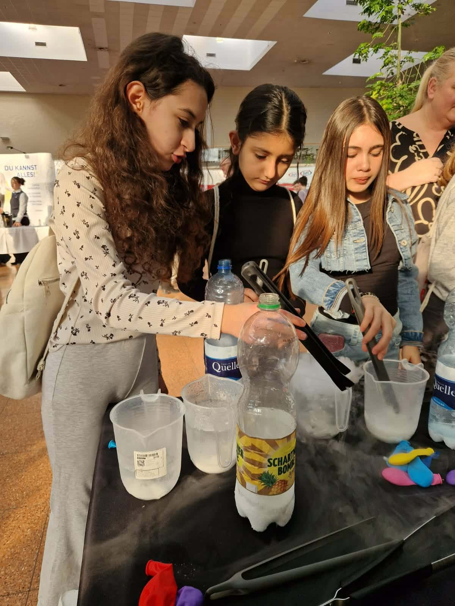
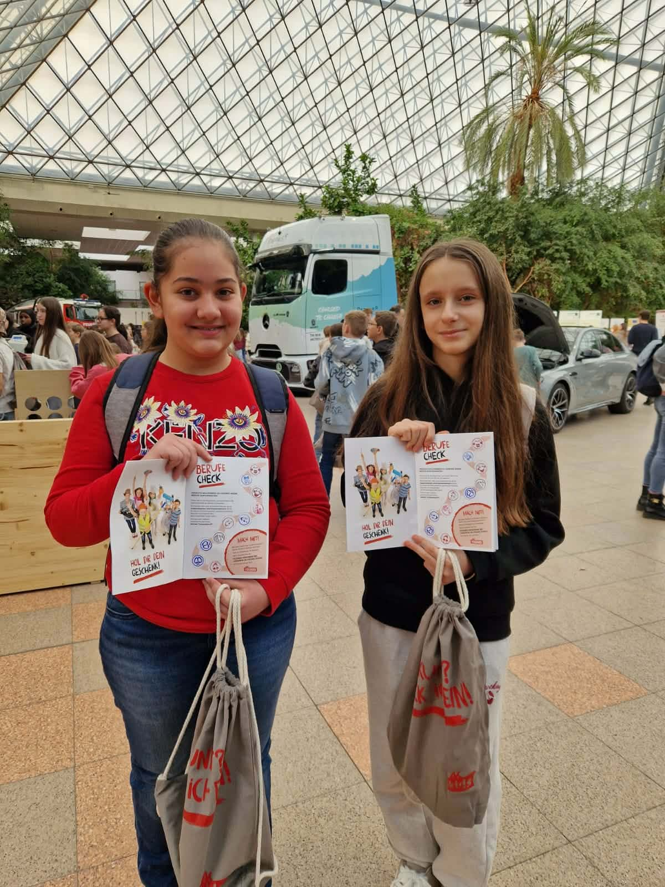
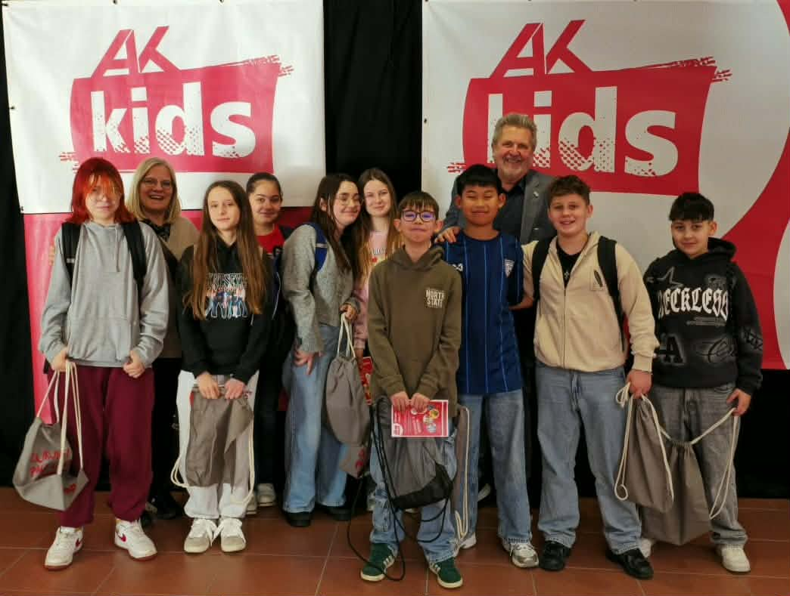
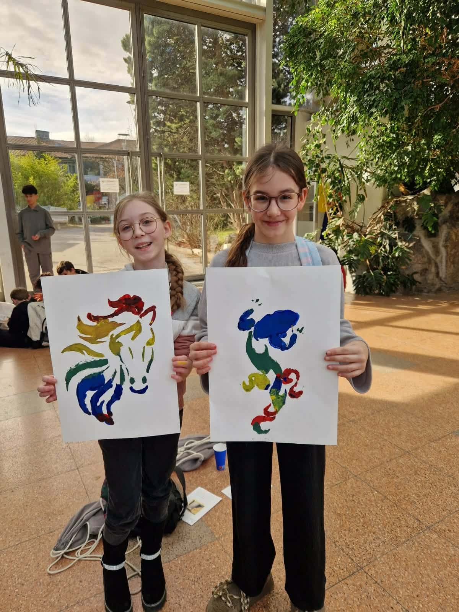
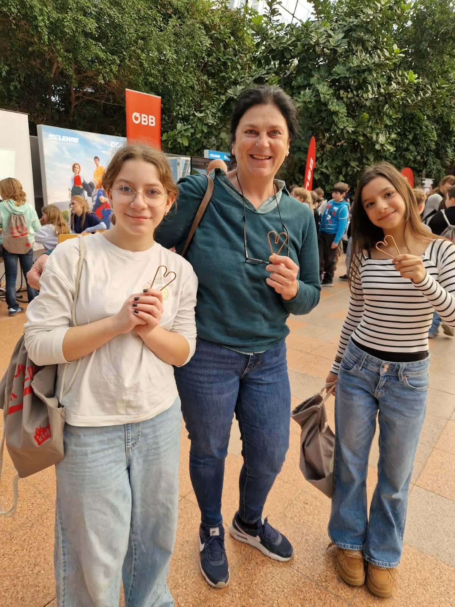

Berufe nicht nur kennenlernen, sondern wirklich erleben: Unsere Schülerinnen und Schüler tauchten bei der Informationsmesse der Arbeiterkammer Niederösterreich hautnah in die Berufswelt ein.
Die Arbeiterkammer Niederösterreich lädt jedes Jahr Schulklassen zu ihrer Berufsorientierungsmesse ein — und heuer waren auch Klassen der MS Hirtenberg mit dabei. Unter dem Motto „Berufe zum Angreifen" präsentierten zahlreiche Firmen, Institutionen und Ausbildungseinrichtungen ihre Berufsfelder auf eine ganz besondere Art: nicht mit Folien und Broschüren, sondern mit echten Mitmach-Stationen, Experimenten und direkten Gesprächen mit Fachleuten.
Hands-on statt Frontalvortrag
Was die Messe von einem gewöhnlichen Informationstag unterschied: Passivität war hier nicht gefragt. Unsere Schülerinnen und Schüler konnten an Experimentierstationen selbst Hand anlegen, Materialien testen, kreativ tätig werden und mit echten Berufsleuten ins Gespräch kommen. Von naturwissenschaftlichen Phänomenen über kreative Workshops bis hin zu Einblicken in technische und kaufmännische Ausbildungen — die Bandbreite war enorm.
Besonders beeindruckend war eine Chemie-Station mit Trockeneis, an der die Schülerinnen neugierig und konzentriert experimentierten und dabei erlebten, wie spannend naturwissenschaftliche Berufe sein können. Das dampfende Spektakel zog sofort alle Blicke auf sich — und machte Lust auf mehr.


Kreativität und Technik unter einem Dach
Neben naturwissenschaftlichen Stationen begeisterten auch künstlerische Angebote die Besucherinnen und Besucher. In einem Mal-Workshop entstanden farbenfrohe Bilder mit Pinsel und Farbe — ein Beweis dafür, dass kreative Berufe genauso viel Können und Engagement erfordern wie technische Ausbildungen. Zwei Schülerinnen präsentierten stolz ihre frisch gefertigten Werke: ein leuchtendes Pferd und eine tanzende Figur in kräftigen Primärfarben.
Auch die ÖBB war mit einem Stand vertreten und zeigte, welche vielfältigen Karrieremöglichkeiten die Österreichischen Bundesbahnen bieten — von der Technik über den Fahrdienst bis hin zu kaufmännischen Berufen. Als kleine Erinnerung gab es herzförmige Drahtskulpturen als Mitbringsel für die Schülerinnen und ihre Begleitung.

AK Kids und der Berufe-Check
Die AK Kids — die Jugendinitiative der Arbeiterkammer — stellten in einem eigenen Bereich vor, wie die AK junge Menschen auf ihrem Weg in die Berufswelt unterstützt. Unsere Schülerinnen und Schüler bekamen den praktischen „Berufe-Check" ausgehändigt: ein Heft, das dabei hilft, die eigenen Stärken und Interessen mit passenden Ausbildungsberufen abzugleichen. Dazu gab es gefüllte Rucksäcke mit weiteren Infomaterialien — ein nachhaltiges Mitbringsel, das auch zu Hause zum Nachdenken anregt.
„Ich wusste gar nicht, wie viele verschiedene Berufe es gibt — und dass ich bei manchen sogar selbst ausprobieren kann, ob sie mir gefallen." — Schülerin der MS Hirtenberg


Ein Tag, der Horizonte öffnet
Für viele unserer Schülerinnen und Schüler war dieser Ausflug weit mehr als ein schulischer Pflichttermin — er war eine echte Inspiration. In einem Alter, in dem die Frage „Was will ich einmal werden?" immer konkreter wird, bieten solche Erfahrungen wertvolle Orientierung. Das direkte Gespräch mit Berufstätigen, das Ausprobieren an echten Stationen und das Kennenlernen einer Vielfalt von Ausbildungswegen gibt den Jugendlichen die Möglichkeit, eine informierte Entscheidung für ihre Zukunft zu treffen.
Die Berufsorientierung ist an der MS Hirtenberg ein fest verankerter Schwerpunkt. Veranstaltungen wie diese Messe ergänzen den Unterricht ideal und zeigen, dass Schule und reale Berufswelt eng zusammengehören. Wir danken der Arbeiterkammer Niederösterreich herzlich für die Organisation dieses informativen und kurzweiligen Tages — und freuen uns bereits auf die nächste Gelegenheit!